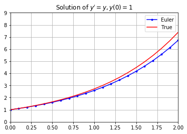
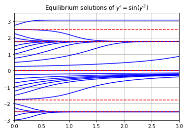

Persamaan Urutan Pertama
Disini kita akan menggunakan numpy dan matplotlib, maka sebelum kita mulai, mari kita import kedua package tersebut:
import numpy as np
import matplotlib.pyplot as plt
Definisi
Persamaan diferensial adalah persamaan yang melibatkan fungsi \(y(t)\) yang tidak diketahui (dengan variabel independen \(t\)) dan turunannya \(y'\), \(y''\), \(y'''\), dll. Urutan persamaan diferensial mengacu pada turunan urutan tertinggi dari fungsi \(y(t)\) yang tidak diketahui muncul dalam persamaan. Persamaan diferensial berjajar jika bentuknya
di mana \(a_n, \dots, a_0, f\) adalah fungsi dari variabel independen \(t\) saja. Misalnya, persamaan
adalah urutan kedua non-linear, dan persamaan
adalah linear urutan pertama. Sebagian besar persamaan diferensial tidak mungkin dipecahkan secara eksplisit namun kita selalu dapat menggunakan metode numerik untuk solusi perkiraan.
Metode Euler
Metode numerik paling sederhana untuk mendekati solusi persamaan diferensial adalah metode Euler. Pertimbangkan persamaan diferensial urutan pertama dengan kondisi awal:
Prosedur untuk metode Euler adalah sebagai berikut:
- Buat persamaan garis tangen ke fungsi \(y(t)\) yang tidak diketahui di \(t=t_0\):
di mana \(y'(t_0) = f(y_0,t_0)\) adalah kemiringan \(y(t)\) di \(t=t_0\).
- Gunakan garis tangen untuk memperkirakan \(y(t)\) pada langkah kecil \(t_1 = t_0 + h\).
di mana \(y_1 \approx y(t_1)\).
- Bangun garis tangen pada titik \((t_1,y_1)\) dan ulangi.
Rumus untuk metode Euler menentukan urutan rekursif:
di mana \(y_n \approx y(t_n)\) untuk setiap \(n\). Jika kita memilih nilai \(t\) ber spasi yang sama maka rumus menjadi
dengan langkah waktu \(h = t_{n+1} - t_n\).
Perhatikan dua hal yang sangat penting tentang metode Euler dan metode numerik secara umum:
- Langkah waktu yang lebih kecil \(h\) mengurangi kesalahan dalam perkiraan.
- Langkah waktu yang lebih kecil \(h\) membutuhkan lebih banyak komputasi.
Implementasi
Mari kita tulis fungsi yang disebut odeEuler yang mengambil 3 parameter input f, y0, dan t di mana:
- f adalah fungsi dari 2 variabel yang mewakili sisi kanan dari persamaan diferensial urutan pertama \(y' = f(y,t)\).
- t adalah array 1D NumPy dari nilai \(t\) di mana kita mendekati nilai \(y\).
- y0 adalah nilai awal \(y(t_0)=y_0\) di mana \(t_0\) adalah entri pada indeks 0 dari array t.
Fungsi odeEuler mengembalikan array 1D NumPy dari nilai \(y\) yang memperkirakan solusi \(y(t)\) dari persamaan diferensial
dengan metode Euler. Perhatikan bahwa kita tidak menentukan nilai langkah waktu \(h\) Sebagai gantinya, fungsi odeEuler mengambil array nilai \(t\) dan mengembalikan nilai \(y\) yang mendekati solusi \(y(t)\) dengan rumus
def odeEuler(f,y0,t):
'''Perkiraan solusi y'=f(y,t) dengan metode Euler.
Parameters
----------
f : function
Sisi kanan persamaan diferensial y'=f(t,y), y(t_0)=y_0
y0 : number
Nilai awal y(t0)=y0 di mana t0 adalah entri pada indeks 0 dalam array t
t : array
Array 1D NumPy dari nilai t di mana kita memperkirakan nilai y. Langkah waktu pada setiap iterasi diberikan oleh t[n+1] - t[n].
Returns
-------
y : 1D NumPy array
Perkiraan y[n] solusi y(t_n) dihitung dengan metode Euler.
'''
y = np.zeros(len(t))
y[0] = y0
for n in range(0,len(t)-1):
y[n+1] = y[n] + f(y[n],t[n])*(t[n+1] - t[n])
return y
Contoh
Persamaan Eksponensial
Mari kita terapkan metode Euler untuk solusi perkiraan \(y' = y\) untuk \(t \in [0,2]\). Kita tahu solusinya adalah \(y(t) = e^t\) dalam hal ini dan sehingga kita dapat membandingkan perkiraan dengan metode Euler dengan solusi yang benar.
t = np.linspace(0,2,21)
y0 = 1
f = lambda y,t: y
y = odeEuler(f,y0,t)
y_true = np.exp(t)
plt.plot(t,y,'b.-',t,y_true,'r-')
plt.legend(['Euler','True'])
plt.axis([0,2,0,9])
plt.grid(True)
plt.title("Solution of $y'=y , y(0)=1$")
plt.show()

Persamaan Non-linear
Mari kita plot perkiraan \(y'=y^2\) untuk \(y(0)=-1\). Kita tahu solusinya adalah
t = np.linspace(0,5,16)
y0 = -1
f = lambda y,t: y**2
y = odeEuler(f,y0,t)
t_true = np.linspace(0,5,100)
y_true = -1/(t_true + 1)
plt.plot(t,y,'r.-',t_true,y_true)
plt.legend(['Euler','True'])
plt.grid(True)
plt.axis([0,5,-1,0])
plt.title("Solution of $y'=y^2 , y(0)=1$")
plt.show()

Persamaan Otonom
Mari kita lakukan sebuah contoh di mana kita tahu bahwa tidak mungkin untuk menemukan solusi yang sebenarnya. Mari kita perkiraan solusi \(y' = \sin(y^2)\) untuk setiap kondisi awal \(y(0)=-3,-2.75,-2.5,...,2.5,2.75\) dan plot semua hasil bersama-sama.
Perhatikan bahwa \(y'=0\) ketika \(y=\pm \sqrt{k \pi}\) untuk \(k=0,1,2,3,4,...\). Poin-poin ini disebut titik keseimbangan persamaan dan mewakili solusi status stabil (atau konstanta).
t0 = 0; tf = 3; h = 0.1;
f = lambda y,t: np.sin(y**2)
t = np.arange(t0,tf+h,h)
for y0 in np.arange(-3,3,0.25):
y = odeEuler(f,y0,t)
plt.plot(t,y,'b')
for k in range(0,3):
y_eq = np.sqrt(k*np.pi)
plt.plot([t0,tf],[y_eq,y_eq],'r--')
plt.plot([t0,tf],[-y_eq,-y_eq],'r--')
plt.grid(True)
plt.axis([0,3,-3,3.5])
plt.title("Equilibrium solutions of $y'=\sin(y^2)$")
plt.show()
